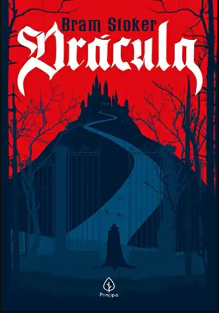

Terror
O terror vigia cada capítulo, esperando que você avance.

O Exorcista
William Peter Blatty
Terror sobrenatural
Ver Detalhes
It: A Coisa
Stephen King
Terror psicológico e sobrenatural
Ver Detalhes

Drácula
Bram Stoker
Terror gótico e sobrenatural
Ver Detalhes